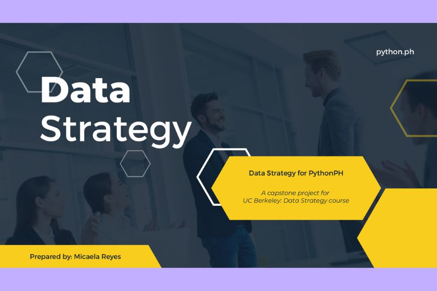

Data Strategy for PythonPH
Volunteer-run communities collect plenty of data but often lack a plan for using it. For my UC Berkeley Data Strategy capstone (2022), I assessed how PythonPH gathers and uses attendee data, identified the gaps, and proposed a small-scale roadmap designed for a nonprofit: decide how data will be used, collect it deliberately, and build data habits among organizers. I shared it with the PythonPH board and core volunteers.
I’ve also applied that thinking through annual event reports that support planning and stakeholder conversations.